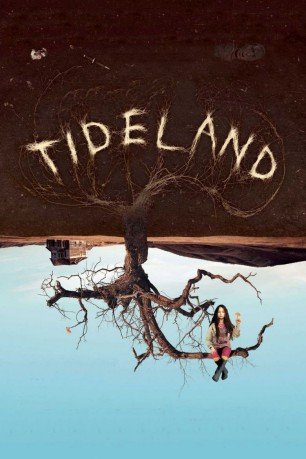

#5568 Tideland
 
 IMDB-Wertung: 6.6 / 10
IMDB-Wertung: 6.6 / 10  Metascore: 0
Metascore: 0 
Nach dem Drogentod der Mutter reist die zehnjährige Jeliza-Rose mit ihrem Vater Noah, einem heroinabhängigen Rockmusiker, in die Prärie, wo er in einer Einöde in einer klapprigen Hütte groß wurde. Während Jeliza-Rose die Umgegend zu erforschen beginnt, nimmt auch der Vater Abschied von seinem irdischen Dasein. Völlig auf sich allein gestellt, mit der langsam verwesenden Leiche des Vaters als ständiges Mahnmal, zieht sich das einsame Mädchen mehr und mehr zurück in eine morbide Fantasiewelt, in der sie neue Freunde findet.
Jahr: 2005
Dauer: 120 Minuten
FSK: 16
Land: England Studio: Concorde Home EntertainmentTonspuren: DTS - ,
Untertitel: Deutsch,
Auflösung: 1080p (1920x820) Größe: 7526 MB
Genre: Horror, Drama, Fantasy
Regisseur:  Terry Gilliam
Terry Gilliam
Drehbuch: F. Scott Frazier
Soundtrack:
Darsteller:
 Jodelle Ferland als Jeliza-Rose / Voices of Sateen Lips, Glitter Gal, Mustique and Baby Blonde
Jodelle Ferland als Jeliza-Rose / Voices of Sateen Lips, Glitter Gal, Mustique and Baby Blonde Janet McTeer als Dell
Janet McTeer als Dell Brendan Fletcher als Dickens
Brendan Fletcher als Dickens Jennifer Tilly als Queen Gunhilda
Jennifer Tilly als Queen Gunhilda Jeff Bridges als Noah
Jeff Bridges als Noah- Dylan Taylor als Patrick
- Alden Adair als Luke , uncredited
- Wendy Anderson als Woman / Squirrel's Voice
- Sally Crooks als Dell's Mother
- Mitch Cullin als Bus Passenger , uncredited
- Harry Gilliam als Jerry , uncredited
- Kent Nolan als Boy , uncredited
Datei: X:\2005(N-Z)\Tideland (2005, FSK16, 1920x820).mkv seit 17.02.2017
Festplatte: HD 2005(G-Z)-2006(A-Z)
 Es gibt insgesamt 50 Filme in der Gruppe '2005(N-Z)'
Es gibt insgesamt 50 Filme in der Gruppe '2005(N-Z)'